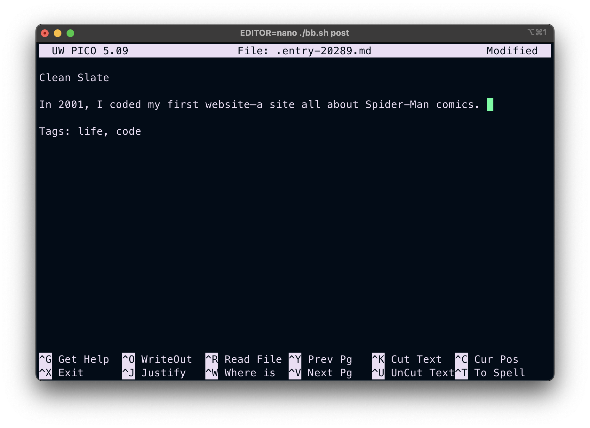

I Made My First YouTube Video
Last June I worked on my first video project while visiting Tokyo. I used a DJI Osmo Pocket 3—a small, cute-looking film camera which stabilizes itself during filming. Over the course of two weeks, I captured scenes during my walks through the vast metropolis of Tokyo as well as some lovely day trips with my partner.
After a ton of YouTube tutorials on editing, color-grading, and audio mixing, this is the final result. The music is by one of my favorite Japanese musicians, Tomoyuki Asakawa and proved very helpful for making selection of shots.
Tags: life
A Clean Slate
In 2001, I coded my first website, all about Spider-Man comics. I built it in HTML, complete with iframes and speech bubble drawings for the navigation. More sites followed: a Harry Potter fan site and a site celebrating the newly-launched Xbox to name a few.
Each project was abandoned as quickly as it was conceived. Once the novelty wore off, I’d jump to the next thing, leaving behind a wasteland of iframes and half-written introductions.
This pattern of jumping from project to project has followed me throughout my life.
Two years ago, I started working on Wabisebi, a blog about Japan. Soon came additional ideas: book reviews, artist spotlights, and a language study section. I hired developers, kept adding features, and talked up this great project I was building. But like always, the novelty wore off and perfectionism kicked in. The thought of filling and illustrating the entire blog became overwhelming.
Recently I spent a lot of time reflecting on this recurring problem and decided to try out a change. Sometimes it’s good to do the reverse of what has not been working.
So, instead of building a website with tons of features that I then need to fill up, I’ve decided to start bottom-up. Starting at its most basic fundamentals and only implementing things when they are really needed. I’m using this simple bashlog script, which converts markdown text into HTML pages and let’s me post straight from the command line. Sometimes the best way forward is to strip everything back to its essentials and just begin.

Tags: life